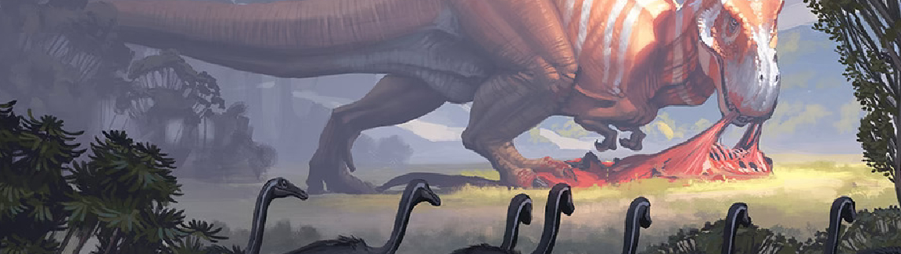
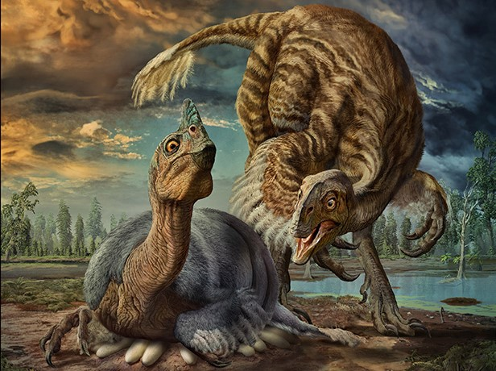
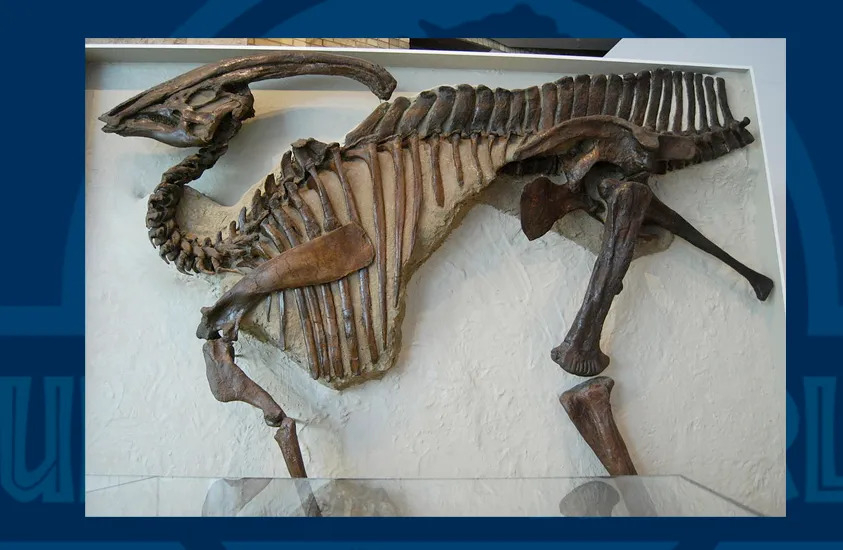
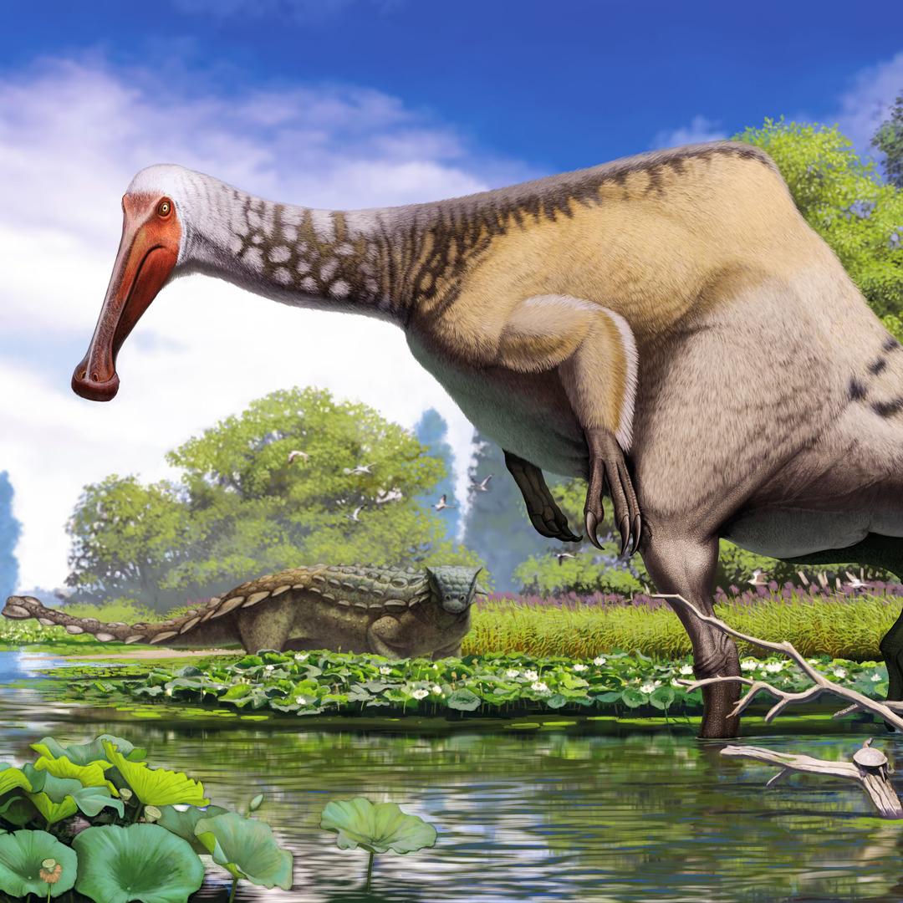

Los tiempos modernos y los animales del hoy.
Llegamos al final de este largo recorrido donde por fin llegamos a la ctualidad y las ideas mucho más modernas que se diferencia de manera total, esta epoca se da desde los ultimos momentos de los 2000 hasta la actualidad, donde la paleontologos y los cientificos vuelven a tener un gran cambio en sus ideas, puesto que los dinosaurios tiene un cambio de imagen total puesto que dejan de ser lo más familiares y amigables reptiles a ser seres mucho más parecidos a las aves. puesto que la mayoria de estas nuevas recontrucciones de los dinosaurios ahora incluyen plumas, al igual que se empiezan a aceptar ideas cada vez más alocadas como: Tejidos cercanos a la boca como lo son labios, tambien que los dinosaurios podrian haber tenidos apendizes parecidos al de algunas aves como los guajolotes o incluso plumas de diversos colores como los pavoreales y tambien la presencia más marcada de dismorfismo sexual y presencia de otros elementos que hacen parecer a los dinosaurios más como aves y animales como los de nuestros dias.
Esta epoca es tambien considerada como la más divisiva entre comunidades cientificas, donde algunos grupos apoyan los cambios y otros grupos los rechazan por completo al creer que estos cambios son una salvajada o algo muy extraño.
Pero aqui tambien marcamos el decline de la fama de los dinosaurios la cula cada dia comienza a extinguirse, pero la paleontologia y la ciencia continuaran investigando y llevandonos a nosotros como humanidad cada vez más cerca de la verdad y conocer la verdadera apariencia de aquellos seres que desaparaecieron de la faz de la tierra.
  